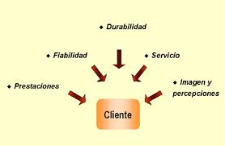

master programation
caracteristicas de la empresa
1.-es un sistema la empresa es un conjunto ordenado de partes interrelacionadas y ligadas a un medio ambiente
2.-entidad autónoma de produccion de bienes o servicios integra de forma coordinada diversos medios productivos
3.-satisfacen necesidades humanas entiéndase por necesidad a la falta o carencia de todo aquello que se requiere para la conservación y desarrollo de la vida
4.-es una unidad juridica opera conforme a leyes vigentes fiscales, laborales, ecológicas, de salud, etc.
5.-posse nombre propio,patrimonio y domicilio el nombre de la empresa es trascendente

6.-adquiere una forma de organizacion empresarial hay tres formas fundamentales de organización empresarial

7.-asume riesgos y responsabilidades

8.-es una unidad social formada por personas y para personas. está insertada en la sociedad a la que sirve y no puede permanecer ajena a ella.
click aqui para pasar a la siguiente pagina